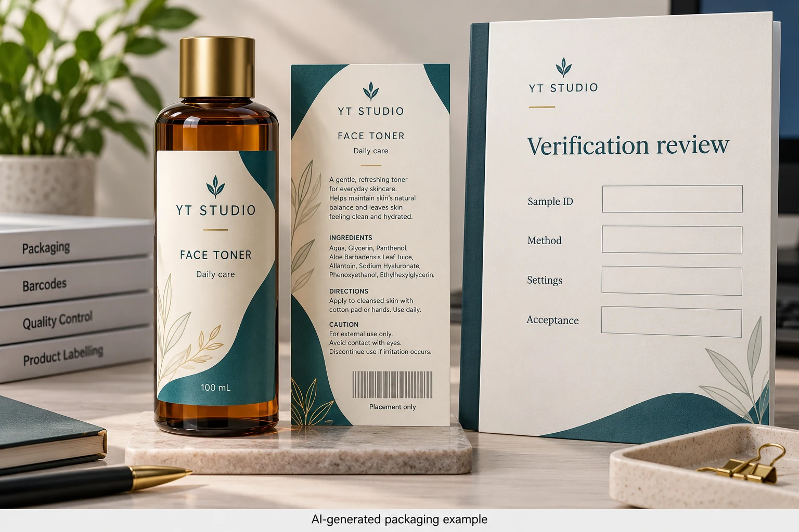
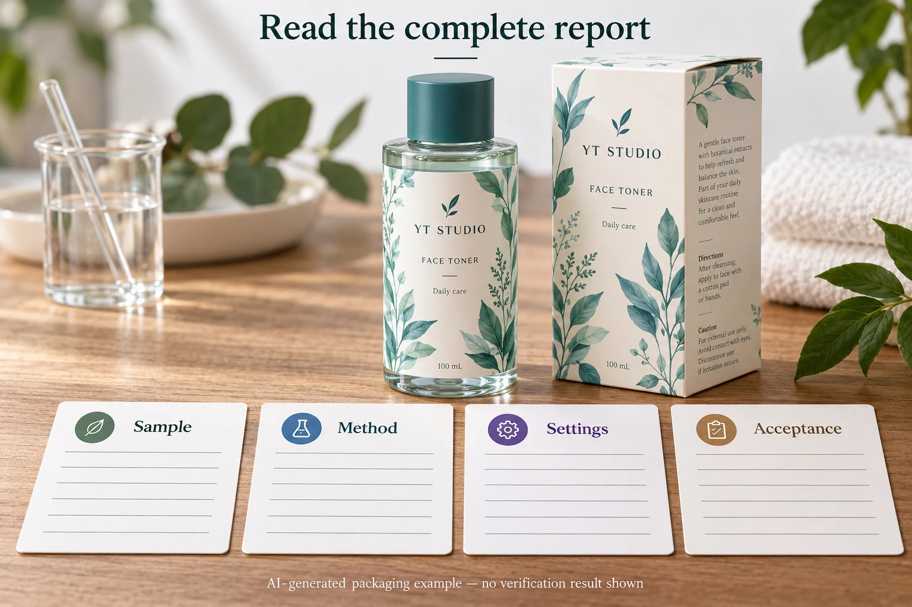

A verification report arrives with a prominent grade. A retailer has requested evidence, and procurement needs to decide whether the report closes the issue or the labels need more work. Start with the sample and assessment conditions before comparing the largest number on the page.
Identify what was verified, how it was assessed and which requirement the result is meant to satisfy. A grade detached from its method, aperture, illumination or sample identity is not enough to justify either acceptance or an expensive corrective print. Ask the verifier to explain any mismatch before treating the report as a verdict on the entire order.

Attach the report to an actual sample
Find the product reference, artwork revision, barcode data and assessed sample in the report or its supporting record. Was the symbol printed on the production label, applied to the intended bottle, or supplied as a loose sample? Was the bottle filled, and does the label background represent the final pack?
Those questions matter particularly for transparent labels. A backing or the product behind the symbol can be part of the presented sample. An assessment of one stage may be useful, but its scope should stay attached to the result. Do not quietly relabel a report on unfinished material as approval of the assembled bottle.
Our finished-bottle barcode checklist covers planning the approval route. This guide begins after evidence has been received: can the buyer interpret this specific report against the requested acceptance requirement?
Read the fields beside the grade
GS1's 1D verification guideline describes the overall grade together with the effective measuring aperture and light-source wavelength. It presents the reporting pattern as grade/aperture/wavelength. That is a reason to retain the complete statement, rather than transferring only the grade into a purchase spreadsheet.
The same guidance distinguishes an overall symbol grade from individual scan or parameter results. A highlighted contrast value or one successful decode does not automatically stand in for the overall assessment the receiving requirement asks for. Have the competent verifier identify the relevant field and explain what it supports.
For 2D symbols, use the applicable 2D method and requirements. GS1's 2D guidance includes illumination and aperture with the reported grade and discusses the illumination angle where relevant. Do not compare differently assessed 1D and 2D reports as though they use one universal acceptance statement.
This guide supplies no default pass grade, aperture or wavelength for every cosmetic label. The applicable application and trading-partner requirement must be confirmed for the actual symbol. A report can be technically detailed and still answer a different question from the one the retailer asked.
Match the report to the receiving requirement
| Check | Information to connect | Action if it does not match |
|---|---|---|
| Symbol and data | Intended symbol type, approved encoded content and product | Ask the data owner and verifier to resolve the identity |
| Sample | Label revision, construction, pack stage and background | Obtain evidence representing the required stage or record its limitation |
| Method | Applicable assessment method and requested application | Ask whether the report is suitable for this requirement |
| Settings | Aperture, illumination and other relevant reported conditions | Request explanation or a comparable assessment |
| Result | Overall grade and relevant diagnostic findings | Avoid substituting one parameter or a scan success for the required result |
| Acceptance | Actual receiver requirement, reviewer and disposition | Keep release open until the responsible party accepts the evidence |

Complete the first two rows before interpreting a grade. Then compare the method and reported conditions with the receiving requirement. If those are incomplete, ask the verifier for the missing information. Preserve the original report; do not edit its headings or change its reported settings to make the paperwork agree.
If the required grade or scope is unclear, clarify it with the trading partner or responsible brand reviewer. If the report appears to fall short, ask which diagnostic finding needs investigation. The next action may be a comparable assessment, a representative sample or an actual print correction. Those are different purchases.
Let the finding choose the correction
Suppose two hypothetical reports describe different sample stages or measuring arrangements. Choosing the higher grade would conceal the difference rather than resolve it. Request an assessment suited to the agreed requirement and identify the pack it represents. The original labels may need no print change if the problem is incomplete or unsuitable evidence.
In another hypothetical project, a representative report identifies an actual symbol-quality issue under the applicable assessment. Ask the printer, barcode specialist and brand owner to connect that finding to the specific artwork or construction before authorising a reprint. Changing an adhesive or a decorative colour without that connection may not address the symbol problem.
If a layout correction changes symbol size, background or position, have the relevant parties review the replacement and agree the evidence needed. A revised PDF is an artwork change; it is not a verification report on the corrected printed bottle.
Check what happens after the report is filed
Record the sample, report reference, result, acceptance decision and any changes that reopen the question. A report from an earlier construction should remain identified as such if the film, finish, opaque panel, bottle or artwork changes. Ask the technical owner which actual changes require reassessment rather than declaring every repeat order automatically covered or automatically invalid.
Keep product identity separate from print quality. A well-printed symbol can encode the wrong product reference. The GTIN change-review guide addresses the owner's decision about identifier changes; it is not replaced by a favourable print-quality report.
Also keep a practical scan check within its scope. It can help confirm what a particular device decodes in the observed condition. It does not recreate all the measurements and reporting conditions of a formal verification process.
Bring the report and the question to the quotation
For custom cosmetic labels, supply the artwork revision, actual container and label construction, quantity per design and the relevant receiver requirement. Include the report reference and identify the precise gap: sample stage, settings, data identity, result or the proposed correction. Ask what representative sample and review can be included in the project scope; do not assume that every label quote includes verification services.
Use the inquiry form to prepare a message. Send the report and artwork separately by email or WhatsApp; the form does not upload attachments. The useful purchasing outcome is an accepted interpretation and a justified next action, not a grade copied out of context.
Sources: GS1 1D Barcode Verification Process guideline and GS1 2D Barcode Verification Process guideline. These references explain reporting concepts; confirm the current application requirements with the responsible verifier and receiving party. No real report, grade or compliant sample is presented here.